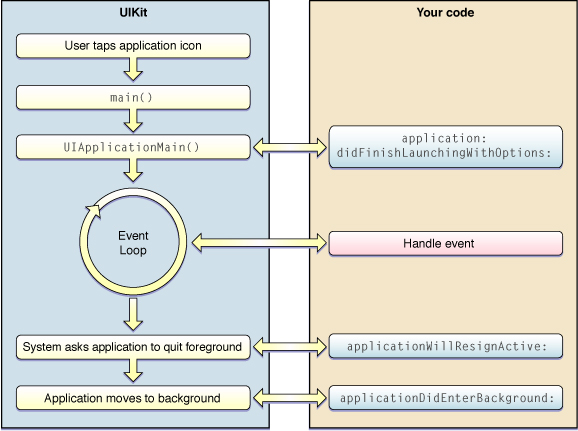

Les bases
- Objective-C : Langage C + paradigme objet
- L'allocation/désallocation sur le tas passe par les appels systèmes connus de la librarie C
- Allocation des objets sur la pile quasi-interdite (sauf les fermetures)
- Langage dynamique grâce au moteur d'exécution (différent de C, C++, ASM, LISP,...)
Allocation
- Compteur de référence : désallocation de l'objet lorsque le compteur est nul
- Classe 'racine' : NSObject
- Chaque objet hérite de NSObject directement ou indirectement : c'est lui qui gère l'allocation/désallocation pour tout ses enfants
MAObject
@implementation MAObject {
Class isa;
volatile int32_t retainCount; //Compteur de référence
}
+ (id)alloc
{ //Appel au moteur d'éxecution pour instancier
MAObject *obj = calloc(1, class_getInstanceSize(self));
obj->isa = self;
obj->retainCount = 1; // Mise à 1
return obj;
}
- (id)retain
{ //Incrémentation atomique
OSAtomicIncrement32(&retainCount);
return self;
}
- (oneway void)release
{ //Décrémentation atomique
uint32_t newCount = OSAtomicDecrement32(&retainCount);
if(newCount == 0) //Si le compteur < 0 -> désallocation
[self dealloc];
}
- (void)dealloc
{ //Appel système standard
free(self);
}
- (id)init
{
return self;
}
- (id)autorelease
{
[NSAutoreleasePool addObject: self];
return self;
}
- (NSUInteger)retainCount
{
return retainCount;
}
L'utilisation du moteur d'exécution dans la fonction alloc :
MAObject *obj = calloc(1, class_getInstanceSize(self));
permet d'allouer la mémoire pour tout les objets.
Propriétaires
L'implémentation des compteurs de référence permet de réfléchir en terme de propriété sur un objet plutôt qu'en terme d'allocation/désallocation mémoire à la manière malloc/free
Convention
- Toute fonction contenant alloc, copy ou commencant par new renvoie une objet dont le compteur de référence vaut 1
- Un appel à retain incrémente le compteur de 1
- Un appel à release décrémente le compteur de 1
Propriétaires d'un objet
Le ou les propriétaires d'un objet sont les derniers objet ayant appellé alloc, copy, new, retain ou équivalens et n'ayant pas appellé release par la suite. Comme aucune allocation d'objet sur la pile n'est tolérée, lorsque l'on parle de propriétaires, on dit que le pointeur possède l'objet qu'il pointe en mémoire.
NSString * foo =[[NSString] alloc] init];
// foo -> (NSString @ 0xFEBCD)
// Le pointeur 'foo' possède l'objet à l'adresse 0xFEBCD - RefCount = 1
NSString *foo2 = [foo retain];
//foo et foo2 -> (NSString @ 0xFEBCD)
// Les deux pointeurs possède l'objet à l'adresse 0xFEBCD - RefCount = 2
[foo release];
// foo ne possède plus l'objet à l'adresse 0xFEBCD - RefCount = 1
// foo2 le possède encore
[foo2 release]
//Plus personne ne possèdent l'objet - RefCount = 0 -> désallocation
Construire et initialiser un objet
Construction
On se sert de la méthode alloc de NSObject
Foo* foo = [Foo alloc];
Initialisation
Allouer la classe ne suffit pas, il nous faut l'initialiser.
//Considéré comme mauvaise pratique
Foo* foo = [Foo alloc];
[foo initOfFoo];
//Considéré comme mauvaise pratique
Foo* foo = [Foo new]; //Équivalent à alloc init
//Bonne pratique
Foo *foo = [[Foo alloc] initOfFoo];
Initialiser un objet
Exemple : une classe Personne
@interface TShirt {
NSUInteger _taille;
NSColor * _couleur;
}
@end
Quelles sont les bonnes pratiques pour l'initialisation ?
Initialiser un objet
Chaque classe doit avoir un initialiseur désigné, c'est celui qui est en charge d'initialiser toutes les valeurs qui conditionnent la vie de l'objet
@implementation TShirt
- (id) initWithTaille:(NSUInteger * )taille AndCouleur:(NSColor *) couleur
{
if(self = [super init])
{
_taille = taille
_couleur = [couleur retain];
}
return self;
}
@end
Initialiser un objet
Tous les autres initialiseurs doivent finir par appeler l'initialiseur désigné
@implementation TShirt
// ...
- (id) initWithTaille:(NSUInteger) taille
{
NSColor * defaut = [NSColor redColor];
return [self initWitTaille:taille AndCouleur:default];
}
- (id) initWithColor:(NSColor * ) couleur
{
NSUInteger default = 36;
return [self initWitTaille:default AndCouleur:couleur];
}
@end
Échec dans l'initialisation
Lors de l'échec dans l'initialiseur :
- Libérer les ressources non désallouées dans dealloc (objet, connexion ultérieurement libérée dans init,...)
- Libérer self qui possède un compteur de 1 à cause de l'appel à alloc
- Retournez nil
Exemple
@implementation Tableaux
//Possède deux iVar : _tab1 -> NSMutableArray et _tab2 -> NSArray
- (id) init
{
if([self = super init]) //RefCounter = 1
{
_tab1 = [[NSMutableArray alloc] init];
if(!_tab)//Si erreur
{
[self release]; //RefCount=0->self dealloc
return nil; //Retour erreur
}
_tab2 = [[NSArray alloc] initWithContentsOfFile:@"…"];
if(!_tab2)
{
[self release]; //RefCount=0->self dealloc
return nil; //Retour erreur;
}
}
returl self;
}
- (void) dealloc
{
[_tab1 release]; //Désallocation
[_tab2 release]; //Désallocation
[super dealloc];
//Rappel : envoyer un message à nil ne fait rien
//-> pas besoin de tester if(!_tab1) [_tab1 release];
}
Destruction d'une classe
- Toujours appeler [super dealloc] en dernier dans la méthode dealloc de la classe
Bon exemple:
- (void) dealloc
{
[_couleur release];
[super dealloc]; // NSObject se charge de désallouer
}
Mauvais exemple:
- (void) dealloc
{
[super dealloc]; // Désallocation de la classe
[_couleur release]; //Erreur pointeur invalide car désalloué
}
Remarque
- Cela ne sert à rien, sauf justification particulière, de mettre des variables à nil dans dealloc
- On peut se dire que si l'appel à [super dealloc] désalloue la classe, ce n'est pas nécessaire d'appeler release
FAUX
@interface A : NSObject {} @end
@interface B : NSObject
{
A *a;
}
- (id) dealloc
{
[a release];
[super dealloc];
}
@end
@interface : NSObject C
{
A *a;
}
- (id) dealloc
{
[super dealloc];
[a release]; //Release n'est jamais envoyé à a
}
@end
A *a = [[A alloc] init]; //a RefCounter = 1
B * b = [[B alloc] init];
C *c = [[C alloc] init];
B->a = [a retain]; //a RefCounter = 2
C->a = [a retain]; //a RefCounter = 3
[a release]; //a RefCounter = 2
[b release]; //a RefCounter = 1 -> message release envoyé dans dealloc de B
[c release]; //a RefCounter = 1 -> message non envoyé -> fuite mémoire
Copie d'objet
- Implémentation du protocol NSCopying et de la méthode copyWithZone: appellée par copy
- L'argument NSZone est un héritage et n'est plus utilisé.
- Implémentation dépend de la sémantique voulue.
Copie d'objet
- Les objets de bases du Frameworks présentent une version mutable et une version immuable
- Immuable : l'objet pointé en mémoire est immuable
- Mutable : l'objet pointé en mémoire est mutable
- Objet immuable ne veut pas dire pointeur immuable
Copie d'un objet
- Copie d'un objet dont la représentation en mémoire ne change pas (immuable) = copie superficielle.
- Copie d'un objet mutable = copie profonde
Exemple avec NSString
Objet immuable ne veut pas dire pointeur immuable :
NSString * string1 = @"String 1";
string1 = @"Autre chose que String1"; //Le pointeur peut changer
// @"String 1" ne change pas en mémoire
La méthode copy de NSString incrémente le compteur de référence de l'objet et renvoie le même objet pointé :
NSString * string1 = @"HELLO";
NSString* copyOfString1 = [string1 copy];
BOOL equal = (string1 == copyOfString1) ; // -> equal = YES
En pratique
//Une copie superficelle
- (id) copyWithZone:(NSZone *)
{
return [self retain];
}
//Une copie profonde (classe héritant de NSObject directement)
//Classe TShirt
- (id) copyWithZone:(NSZone *zone)
{
//[self class] obligatoire pour les classes filles
id copie = [[[self class] allocWithZone:zone]
initWithTaille:[self taille] AndCouleur:[self couleur]];
return copie;
}
//Une copie profonde (classe fille dont la mère implémente une copy)
//Classe héritant de TShirt
- (id) copyWithZone:(NSZone *zone)
{
id copie = [super copyWithZone:zone];
/* Autre opérations éventuelles */
return copie;
}
Autorelease pools
- Les pools ou bassins de libérations automatiques permettent de gérer les cas de transmissions de propriété, à la création de constructeurs de commodités ou de libérer de la mémoire occupée inutilement.
- Dans les applications graphiques (iOS ou Cocoa), un pool de libération est crée automatiquement dans la boucle d'évènement à chaque évènement (NSRunLoop)
- Dans les applications non graphiques, le pool doit être explicitement crée.
Libérer de la mémoire
//Mémoire perdue
@interface Copieur : NSObject
{
NSArray * _chemins_a_copier; // Très grand
NSString * _destination;
}
@end
/*..*/
for(NSString * chemin in _chemins_a_copier)
{
NSString * _nouveau_chemin = [_destination stringByAppendingPathComponent:chemin];
/* Longue opération */
}
//Beaucoup mieux
for(NSString * chemin in _chemins_a_copier)
{
NSAutorelease * pool = [[NSAutoreleasePool alloc] init];
NSString * _nouveau_chemin = [_destination stringByAppendingPathComponent:chemin];
/* Longue opération */
[pool release];
}
Autorelease
- On ajoute un objet dans le pool courant en lui envoyant le message autorelease
- À chaque appel de la méthode release du pool, un message release est envoyé à chacun des objets présents dans le pool
- Si on appellé N fois la méthode autorelease sur un objet, il faudra appeler N fois la méthode release du pool
Boucle d'évènements

Boucle d'évènements
The Application Kit creates an autorelease pool on the main thread at the beginning of every cycle of the event loop, and drains it at the end, thereby releasing any autoreleased objects generated while processing an event.
//En pseudo code
intUIApplicationMain(...)
{
while(!shouldQuitApplication)
{
UIEvent*someEvent =// Attente d'un évènement;
NSAutoreleasePool*myPool =[[NSAutoreleasePool alloc] init];
/* Traitement d'un évement :
- Action sur un bouton
- Connexion entrante
- Notification
....
*/
[myPool release];
}
}
Chaque thread possède sa propre boucle d'évènements.
Exemple
//Un bassin a été crée avant d'appeler la méthode
NSAutoreleasePool * pool = [[NSAutoreleasePool alloc] init];
- (IBAction) buttonClicked:(id)sender
{
NSString * message = [NSString stringWithFormat:@"Sender : %p",sender];
// message RefCounter = 1
NSObject * obj = [[[NSObject] alloc] init] autorelease];
//Ajout de obj au bassin - obj Refcounter = 1
}
// Dès le retour de la méthode l'évènement est traité est le "bassin est vidangé"
[pool release];
//Envoie un message release à tous les éléments du bassin
// obj Refcounter = 0
//message RefCounter = 0
Constructeurs de commodités
- Permet de construire un objet dont on a pas forcément besoin par la suite
- Utilisation d'une méthode de classe et non d'instance
- L'objet crée est ajouté dans le bassin de libération avant d'être retourné
Exemple
+ (id) tshirtWithRed
{
return [[[TShirt alloc] initWithColor:[UIColor redColor]] autorelease];
}
Attention dans le cas d'une sous-classe
//Classe TShirtPersonnalisé : TShirt
+ (id) tshirtpersonnaliseWithRed
{
return [[[self alloc] initWithColor:[UIColor redColor]] autorelease];
}
//Appel à self permet de réutiliser les constructeurs des classes parentes
Mutateurs
- Respect de l'encapsulation des données
- Selon le type de variable, les mutateurs n'ont pas la même forme
* Important de comprendre ces formes.
Types de mutateurs
- Assignation avec transfert de propriété (référence forte)
- Assignation sans transfert de propriété (référence faible)
- Assignation d'une copie de l'objet (référence forte sur nouvel objet)
Référence faible
Cas le plus trivial
//Comment faire ?
@interface VuePersonnalisee : UIView {
id _delegate ;
}
@end
// Comment écrire le mutateur de '_delegate' ?
Référence faible
Cas le plus trivial
//Comment faire ?
@interface VuePersonnalisee : UIView {
id _delegate ;
}
@end
@implementation VuePersonnalisee
- (void) setDelegate:(id) delegate
{
_delegate = delegate
}
@end
Référence forte
But : garder l'ancienne valeur + relâcher l'ancienne valeur sans "leak"
//Comment faire ?
@interface HTTPRequest : NSObject {
NSMutableString* _buff
}
@end
// Comment écrire le mutateur de 'buff' sans fuite mémoire ?
Référence forte
But : garder l'ancienne valeur + relâcher l'ancienne valeur sans "leaks"
//Comment faire ?
@interface HTTPRequest : NSObject {
NSMutableString* _buff
}
@end
// Comment écrire le mutateur de 'buff' sans fuite mémoire ?
@implementation HTTPRequest
- (void) setBuff:(NSMutableString *) buff
{
[buff retain];// OBLIGATOIRE : si buff == _buff
[_buff release];
_buff = buff;
}
@end
Référence sur copie
Même problématique que la référence forte simple
//Comment faire ?
@interface Personne : NSObject {
NSString * _nom
}
@end
// Comment écrire le mutateur de 'buff' sans fuite mémoire ?
@implementation Personne
- (void) setNom:(NSString *) nom
{
NSString * copy = [nom copy]; // OBLIGATOIRE : si nom == _nom car
[_nom release]; // si les objet sont immuables, ils utilisent
_nom = nom; // généralement des copies superficielles
}
@end
Cycles de retenues
Il faut normalement éviter que deux objets possèdent chacun une référence forte l'un vers l'autre.
//Exemple
@interface A : NSObject {
B * _b;
}
@implementation A
-(void) setB:(B*)b{
[b retain];
_b release];
_b = b;
}
@end
@interface B : NSObject {
A * _a;
}
-(void) setA:(A*)a{
[a retain];
_a release];
_a = a;
}
A * a = [[A alloc] init]; // A RefCounter = 1
B * b = [[B alloc] init]; // B RefCounter = 1
[a setB:b];// B RefCounter = 2
[b setA:a];// A RefCounter = 2
[a release];// A RefCounter = 1 B RefCounter = 2
[b release];// B RefCounter = 1 A RefCounter = 1
//-> Leak potentiel
Les propriétés
Rappels
- Permet de créer dynamiquement l'éxecution des mutateurs et accesseurs sur les variables d'instances
- Originairement : 1 déclaration de @property = 1 déclaration de @synthetize
- Depuis XCode 4.4 le front-end LLVM, les déclaration de @synthetize sont automatiques
Exemple
//Avant XCode 4.4
@interface Personne : NSObject {
NSString * _nom;
NSString * _prenom;
NSMutableArray * _emails;
Personne * _voisin;
}
@property (copy) NSString * nom;
@property (copy) NSString * prenom;
@property (retain) NSMutableArray *emails;
@property (assign) Personne *voisin;
@end
@implementation Personne
@synthetize nom = _nom;
@synthetize prenom = _prenom;
@synthetize emails = _emails;
@synthetize voisin = _voisin;
@end
Exemple
//Après XCode 4.4
@interface Personne : NSObject
@property (copy) NSString * nom;
@property (copy) NSString * prenom;
@property (retain) NSMutableArray *emails;
@property (assign) Personne *voisin;
@end
@implementation Personne
//Clang crée automatiquement une variable préfixié par "_" (underscore)
// si aucun synthetize ne précise la méthode
// ATTENTION : le front-end GCC ne le permet pas
@end
Types de propriétés
- retain : assignation avec transfert de propriété
- assign : assignation sans transfert de propriété
- copy : assignation d'une copie de l'objet
Le runtime implémentent les mêmes mutateurs que ceux vus précédemment
Attention types immuables
@interface Person
@property (…) NSString* name;
@end
NSMutableString*someName =[NSMutableString stringWithString:@"Chris"];
Person*p =[[[Person alloc] init] autorelease];
p.name = someName;
[someName setString:@"Debajit"];
//Qu'attendrait t'on dans ce contexte ?
@interface Person
@property (…) NSString* name;
@end
NSMutableString*someName =[NSMutableString stringWithString:@"Chris"];
Person*p =[[[Person alloc] init] autorelease];
p.name = someName;
[someName setString:@"Debajit"];
//Que vaut p.name si la property est retain ? copy ?
// -> retain : p.name = @"Debajit"
// -> copy : p.name = @"Chris"
//NSString est immuable -> erreur de sémantique
Les types immuables doivent normalement utiliser des mutateurs avec référence sur copie.
Introduction à l'ARC
- L'ARC n'est pas un ramasse-miette.
- Remplace le garbage collector instauré sur Mac OS X 10.5 à partir de 10.7
- Activer l'ARC = demander au compilateur d'écrire les messages retain, release et autorelease à votre place
- Inconvénients : pas d'action directe sur la gestion mémoire, non disponible sur les versions Mac < 10.7
ARC et LLVM
- LLVM garde les concepts de propriétés sur les objets
- Interdiction d'envoyer retain, release et autorelease
- Le type de liaison entre objet (référence forte, faible, copie) se fait à la déclaration de la variable ou de la propriété.
Mots-clefs LLVM
- __strong
- __weak
- __autoreleasing
- __unsafe_unretained
__strong
Référence forte avec transfert de propriété. C'est la valeur par défaut si rien n'est spécifié.
//Exemple
NSMutableString * A; //Équivalent à __strong
NSMutableString * __strong B;
//ARC
A = [[NSMutableString alloc] initWithString:@"Hello"];
B = A ;
//Équivalent
A = [[NSMutableString alloc] initWithString:@"Hello"];
B = [A retain];
[A release];
__weak
Référence faible sans transfert de propriété et pointeur mis à nil quand il n'existe plus de référence forte sur l'objet.
//Exemple
NSMutableString * __strong A;
NSMutableString * __weak B;
//ARC
A = [[NSMutableString alloc] initWithString:@"Hello"];
B = A ;
//Équivalent
A = [[NSMutableString alloc] initWithString:@"Hello"];
B = A;
/* Différentes opérations au cours desquelles A est désalloué */
B = nil;// Mis à 0 quand plus aucune référence forte n'existe sur l'objet
// Ici, quand B est désalloué
__unsafe_unretained
Équivalent à __weak sauf que le pointeur n'est pas mis à nil une fois l'objet désalloué
//Exemple
NSMutableString * __strong A;
NSMutableString * __unsafe_unretained B;
//ARC
A = [[NSMutableString alloc] initWithString:@"Hello"];
B = A ;
//Équivalent
A = [[NSMutableString alloc] initWithString:@"Hello"];
B = A;
/* Différentes opérations au cours desquelles A est désalloué */
B = ??? ;// B est un "dangling pointer"
__autoreleasing
Indique un objet passer par référence (de type id * ) et qui est envoyé dans le bassin de libération en retour de fonction
// Exemple sur les NSError
-(BOOL)performOperationWithError:(NSError * __autoreleasing *)error;
Attention à l'ARC
L'ARC respecte de manière bête et méchante les rêgles de gestion mémoire à la main : un appel à alloc provoque un appel à release
- (void) foo
{
NSArray * array = [[NSArray alloc] init];
/* …*/
// ARC ajoute un [array release]; à la fin
}
@autorelease
Les bassins de libération automatiques se déclarent avec @autorelease. L'ancienne déclaration est correcte mais moins efficace
//Beaucoup mieux
for(NSString * chemin in _chemins_a_copier)
{
@autorelease
{
NSString * _nouveau_chemin = [_destination stringByAppendingPathComponent:chemin];
/* Longue opération */
}
}
ARC et @property
- assign -> __unsafe_unretained .
- copy -> __strong ownership + mutateurs de copie
- retain -> __strong
- strong -> __strong
- unsafe_unretained -> __unsafe_unretained
- weak -> __weak
Cycles de retenues
Même remarque que précédemment
//Exemple
@interface A : NSObject
@property(strong) B* b;
@end
@interface B : NSObject
@property(strong) A* a;
@end
A* a = [[A alloc] init];
B* b = [[B alloc] init];
A.b = b;
B.a = a;
--> Leak potentiel
Aller plus loin
- Transitioning to ARC Release Notes* - Apple documentation
- Advanced Memory Management Programming Guide* - Apple documentation
- Objective-C Automatic Reference Counting* LLVM doc